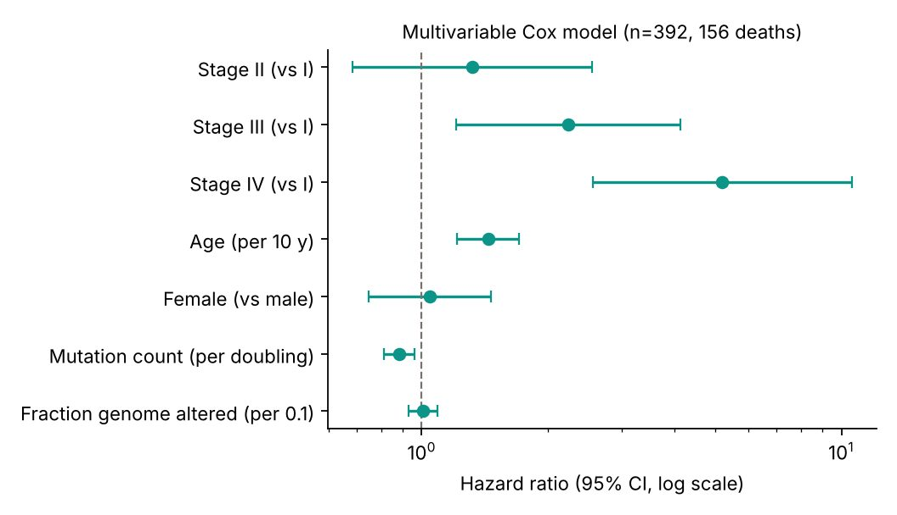
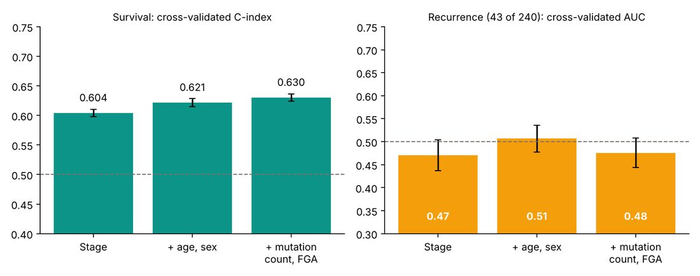

Stomach Cancer Survival
TCGA-STAD clinical-genomic survival and recurrence analysis. Kaplan-Meier, log-rank and a multivariable Cox model written from scratch and verified on simulated data, on 443 patients.
Pick a patient profile. The relative hazard is computed from the fitted Cox hazard ratios, against a reference patient: stage I, age 65, male, cohort reference mutation count.
Exploratory research model on one public cohort. Hazard ratios describe associations, not causes, and this is not a clinical tool.
What predicts survival in stomach cancer?
Which factors are associated with overall survival in the TCGA stomach adenocarcinoma cohort, does a tumour's genomic burden add anything beyond stage, and can recurrence be predicted from routine variables?
- Stage separates survival clearly: median 72, 55, 25 and 13 months for stages I to IV (log-rank p = 5.6e-6).
- Age adds risk: HR 1.44 per 10 years. Sex shows no association.
- Higher mutation count was associated with longer survival: HR 0.89 per doubling.
- Recurrence could not be predicted: cross-validated AUC 0.47 to 0.51. I report that as a negative result.
Statistics written from scratch, then tested
Kaplan-Meier, the log-rank test, Cox regression with Breslow ties and Harrell's C-index are implemented in numpy and scipy. Self-tests check them against known values, a permutation test and simulated data where the Cox model recovers the true hazard ratios with 96% interval coverage.
Model comparison uses 5-fold cross-validation repeated 20 times with identical folds: stage only 0.604, plus age and sex 0.621, plus genomic summaries 0.630.
From the analysis
Select a figure to enlarge it.


